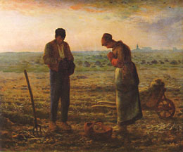

 Gerard menciona el Angelus. Según parece, en otros tiempos (tiempos en que tal vez el hombre se llevaba mejor con el cosmos, y los ritos formaban parte de ese trato) se escuchaba el toque de campanas al atardecer, cuando el día de trabajo terminaba, y en ese momento los hombres recordaban la Anunciación ("El Ángel del Señor anunció a María...") y rezaban los tres AveMarías.
{kind=link}
Y bien,
el cuadro de Millet [*] no será un retrato
del mundo de hoy, sin dudas; pero
los cristianos -dice Gerard, y lo tomo para mí-
deberíamos esforzarnos en integrar eso (y cosas
como esa) dentro de nuestra rutina diaria de oración...
y acaso esa especie de nostalgia que nos despierta
la imagen -si no se queda en sensiblería- pueda
ayudar a darnos ese empujón que siempre nos hace falta.
«Romanticismos aparte, escuelas pictóricas aparte, incusive, si se quiere, el arte aparte, el Angelus de Millet sigue conmoviendo a toda alma bien nacida y bien criada....», dice Ignacio Anzoátegui, entre el consabido montón de dichos graciosos-arbitrarios-ingeniosos-irritantes... A este -sin que le falten sus peros, y su leve sabor irritante para los infieles- le puedo un "aprobado" ... creo.
Otra de Tom: sobre el escándalo en el sentido religioso de la palabra (es decir: aquello que sentimos como una obstáculo para creer, para caminar en la fe; piedra de tropiezo).
En ese sentido, dice Tom, me escandalizo cuando Dios no se comporta como yo esperaba, cuando "no cubre mis expectativas". Pero, naturalmente, uno no debería esperar que Dios haga lo que uno espera...
Por eso, sentir el escándalo como algo ajeno es un mal signo (es a su vez
un escándalo, en otro plano); signo probable de que estamos armándonos
un Dios falso a nuestro gusto -un ídolo. Si no ves en Cristo la posibilidad
del escándalo, diría Kierkegaard, no entendés el cristianismo :
«El Dios hombre (y con esto entiende el cristianismo,
no una fantástica especulación sobre la unidad de Dios y del hombre,
sino un hombre individuo que es Dios) sólo existe para la fe;
mas la posibilidad del escándalo es cabalmente el choque del que
puede surgir la fe -si es que uno no elige el escándalo» (SK)
Kierkegaard analiza el escándalo en las dos direcciones: la
que (dicho en su lenguaje) se da en dirección de la pequeñez
(es un escándalo que Dios se haga hombre, "este hombre"- y este hombre
insignificante, despreciado, burlado y crucificado)
y la que se da en dirección de la grandeza (que este hombre
pretenda hablar en nombre de Dios, actuar como si fuera Dios,
decir que es Dios).
Tom por su parte opone el escándalo que proviene del hecho de la Encarnación con el de la Crucifixión (la Pasión y Muerte). Y dice algo curioso y sugerente: Hablando en general, a los no cristianos los escandaliza más la Encarnación, a los cristianos, la Crucifixión.
Una vez más -y esta vez, más- hago mío lo que dice Tom de Disputations.
(Lástima que lo de "unapologetically catholic" sea intraducible, si no me lo agarraba de slogan).
Más (perdón, perdón; es más fuerte que yo) de P. G. Wodehouse, que leí hoy en el subte; del libro (ed. Penguin, los de tapas naranjas) "Jeeves in the offing":
-
—I got the wrong book- she said-. The one I wanted was...
Then her eye fell on Kipper and she stiffened in every limb, rather like Lot's wife, who, as you probably know, did the wrong thing that time there was all that unpleasantness with the cities of the plain and got turned into a pillar of salt, though what was the thought behind this I've never been able to understand. Salt, I mean. Seems so bizarre somehow and not at all what you would expect.
Con respecto al listado de conversos, Juanjo Romero aporta:
-
Echo de menos otra categoría, algo lejana a un anglo y más cercana a un
cubano-hispano-peninsular, los judeo-conversos: Pedro Alfonso, Pablo Burgos,
Juan (san) de Ávila, Juan de Sevilla...un largo etc con apellidos de ciudad
generalmente, el Siglo de Oro español está lleno. Ah!, y Lustiger (cardenal de
París) y Torquemada (el famoso
Inquisidor). Y otros intelectuales como Peter Thomas Geach, Alfred Fuchs y otros austriacos y checos.
Eduardo, me recuerda que, entre nosotros (argentinos) en el siglo XX hay muchos intelectuales que abrazaron el catolicismo tardíamente; el mismo Jacobo Fijman, Bernárdez .... Marechal (hmmm)... Y Juan Pablo, como para poner un toque exótico (ya de por sí la colección es pintoresca) agrega a Carrió (!) a la lista.
También me recuerdan, por el lado del santoral, casos como los de San Ignacio de Loyola o San Francisco de Asís, que en algún momento de su vida tuvieron lo que bien puede llamarse -con mayor motivo, en rigor, que muchos de los listados- una "conversión".
Y, por qué no decirlo, varios lectores de este blog son conversos en algún sentido (sé que dos de ellos, por lo menos, tienen el rasgo curioso de serlo en la adolescencia, que normalmente es época más propicia para perder la fe que para encontrarla... o al menos eso creía yo).
PD: Eduardo me recuerda este soneto de Marechal, no tanto como testimonio de parte, sino más bien como poesía -a secas-; en cualquier caso, me dice, "el autor ha visto algo esencial a cualquier conversión (aun la de los creyentes)":
Perdido manantial, llanto sonoro
dilapidado ayer en la ribera
de la tribulación, ¡quién me dijera
que pesarías en balanza de oro!
Rumbo de hiel que todavía lloro,
crucero sin honor y sin bandera,
¡quién me diría que a la primavera
del cielo caminaba tu decoro!
Y cuando recelosa y desvelada,
puesta en su mismo llanto la mirada,
mi soledad entre dos noches iba,
¡quién le dijera, para su consuelo,
que abajo estaba el pez en el anzuelo
y el admirable Pescador arriba!
Leopoldo Marechal
Y sí... a nosotros se nos pone la piel de gallina cuando pronunciamos "latinoamérica", cuando evocamos por las milenarias culturas indígenas, y cuando cantamos lo del "rostro Bolivia. estaño y soledad" ... Pero en realidad, cuando del bien y del mal se trata, miramos más bien para el lado de Holanda y cosas así, viste...?
-
Zaffaroni opina que «es discriminatorio que el Estado fomente el desarrollo, equilibrio y estabilidad afectiva de las personas con orientación heterosexual y que se desentienda de las personas con orientación homosexual».
Para el penalista, justificar esa discriminación reduce «el concepto de familia a una institución reproductora, con la consiguiente degradación de la dignidad humana»...
Vía jazzido, en inglés: una página en forma de interrogatorio sobre Dios y la religión. La idea es medir el grado de "racionalidad" (visto como consistencia lógica interna) de las propias creencias, sean favorables o no a la existencia de Dios.
Es una especie de juego de 17 preguntas (con reglas e implementación muy discutible, claro) donde uno recibe "heridas" si no guarda consistencia lógica y sentido común ( un "direct hit" por cada contradicción palmaria y "bite the bullet" si las respuestas llevan a consecuencias prácticamente absurdas).
Lo hice, y tuve la estúpida satisfacción de recibir una medalla
de honor ("You suffered zero direct hits and bit zero bullets. "),
cosa que el 7.5% de los participantes ha logrado.
Y además, leyendo estos comentarios
se me hace que soy de los pocos que lo lograron habiendo contestado
"Verdadero" a la primer pregunta ("Dios existe?")
Digo que es una satisfacción
estúpida (como la es la jactancia de decirlo), porque en realidad
varias de las preguntas me parecieron demasiado ambiguas y discutibles
como para responderlas con un "verdadero/falso", y las respondí al tuntún. Y, por otro lado, le da menos valor a mis ojos
la orientación de la página (filosofía demasiado anglosajona, me suena),
y el hecho de mencionar a Kierkegaard como un ejemplo de pensador
religioso irracional (
you may go along with thinkers such as Kierkegaard and believe that religious belief does not need to be rationally consistent...) lo cual es por lo menos
dudoso.
Igual, tiene su interés. Sobre la pregunta 12, sobre todo, tenía ya pensado escribir algo... pero queda para otra vez.
Gerard trae un post dedicado a recordar a los conversos notables, sobre todo de este siglo pasado; un poco anglocéntrico, pero no es sólo la lógica familiaridad con los compatriotas, sino que el ambiente de Inglaterra y EEUU ha dado muchos conversos influyentes. Acá va un listado parcial, omitiendo muchos que desconozco:
-
San Pablo,
San Agustín,
John H. Newman ,
Gerard M. Hopkins,
F. Faber,
Gilbert K. Chesterton,
Robert Hugh Benson,
Ronald Knox,
Peter Kreeft,
Malcolm Muggeridge,
St. Edith Stein,
Dorothy Day,
Adrienne von Speyr ,
Gertrude von le Fort,
Jacques and Raissa Maritain,
Fr Louis Bouyer,
Vladimir Soloviev,
Sigrid Undset,
Graham Greene,
Evelyn Waugh,
Walker Percy,
Cardinal Avery Dulles,
Simone Weil,
Thomas Merton,
St. Edmund Campion ,
Gaudi,
Leon Bloy,
Charles Peguy,
Max Jacob,
Paul Claudel,
Andre Frossard,
Giovanni Papini ...
No se trata (aunque desde afuera inevitablemente parecerá así) de una especie de jactancia o de festejo partidario. En este caso, al menos, se trata de alegría y de reconocimiento; porque estos conversos (como suele pasar, muchas veces son los que inyectan sangre joven...) aportaron mucho a la Iglesia, en distintos sentidos. Sin ellos, como dice Gerard, seríamos más pobres.
Supongo que San Pablo y San Agustín podrían ser los patronos...
Y, por cierto, me encantó la inclusión de Simone Weil en la lista.
Quería comentar algo sobre algunas de ellas -la de Evelyn Waugh, para empezar- pero lo dejo para otro post.
Dos observaciones para terminar: quise agregar conversos
del mundo hispano, pero no se me cruzan muchos ... natural, me dirán, la mayoría son católicos de nacimiento; hmmmm....
Otra: se trata aquí de los conversos "famosos"; claro que podemos
mencionar otros que no lo son tanto... entre ellos varios de los bloggers.
(yo mismo me considero uno).
- "
Dinero, dinero, dinero y miedo... Fellini tiene miedo,
Antonioni tiene miedo.
El único que no tiene miedo a nada es Bresson." (Andrey Tarkovsky - 1980)
Empieza el jueves 10. Doce películas, una por día, casi; toda la obra de Bresson, según parece. Notable.
Por cierto: no apto para los que odian las películas "lentas".
Y una curiosidad al paso: esta página
alude a la "visión religiosa jansenista" de Bresson.
-
... rehacer Phánomenologie des Geistes partiendo de los resultados del psicoanálisis y de la etnología. La importancia de la historia de las religiones para la comprensión de los comportamientos arcaicos.
Desde hace unos años, me asedia también otro pensamiento: si es cierto que Marx ha analizado y «desenmascarado» el inconsciente social y que Freud ha hecho lo mismo con el inconsciente personal , si es cierto pues que el psicoanálisis y el marxismo nos enseñan cómo penetrar las «superestructuras» para llegar a las causas y a los móviles verdaderos, entonces la Historia de las Religiones, tal como la entiendo, tendría la misma finalidad: identificar la presencia de lo trascendente en la experiencia humana, aislar en la masa enorme del «inconsciente» lo que es trans-consciente.
Por esta razón me parece tan apasionante y tan decisivo el estudio del simbolismo. Un símbolo puede revelar no sólo
lo bajo
(lo subterráneo -psicoanálisis)
sino también lo que está en la alturas.
Necesitaría muchas páginas para aclarar
todo esto. He dicho unas palabras en el capítulo «Symbolisme de l'ascension» de Mythes, réves et mystéres, pero no he explicado en ninguna parte la función analítica de la Historia de las Religiones, la forma en que nos ayuda a «desenmascarar» la presencia de lo trascendente y lo supra-histórico en la vida de todos los días.
Del Diario de Mircea Eliade
Diciembre 1959
Hoy fui a almorzar con un amigo, conocido por acá, que se suele quejar de la -digamos- escasa enjundia religiosa de nuestros obispos (con algunas excepciones; como la del post anterior). Que a veces nos parecen demasiado preocupados por hacer un buen papel -lo que creen un buen papel- ante La Nación (o Página 12 en otros casos), que diluyen el evangelio en un palabrerío socio-político insustancial y pobre desde todos los puntos de vista (también desde el punto de vista del "impacto"). Yo trataba -es una especie de acto reflejo en mí, la de llevar la contra, un poco en abogado del diablo- de defenderlos, de buscarles probables justificaciones; me aterra sobre todo la posibilidad de parecerme a esos críticos que exhiben tanta maledicencia como autoindulgencia (la revista Panorama de por acá o los Roh Dreher de EEUU, etc).
Pero en buena medida no podía dejar de darle la razón. Me resultaría difícil negar que... bueno, nada, por ahora ... otro día, tal vez....
Al volver al trabajo y revisar mi casilla
de mails, encuentro que recibí uno titulado:
"Cansado de los medios tonos ? ".
Y lo abrí, con cierta ansiedad.
Pero se trataba de
cartuchos de tinta para impresoras, nomás.
Un informe presentado por M. Aguer (arzobispo de La Plata) en Roma, sobre la problemática pastoral de la Iglesia -especialmente en relación con las sectas.
No está destinado específicamente al pueblo, debe leerse completo y en contexto ... y echo de menos algunas cosillas... ; pero tiene lo suyo.